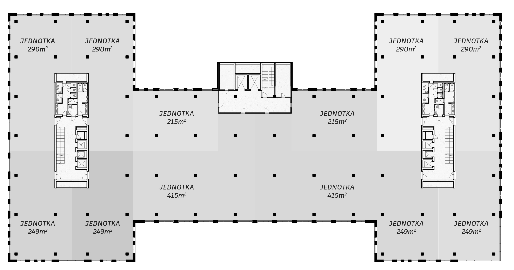
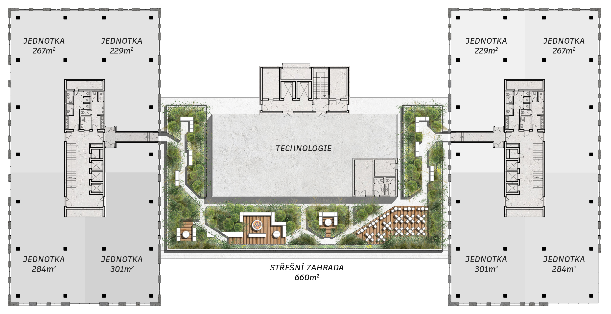

Arc, Beam a Chroma tvoří první etapu technologického centra OXYMA. Budovy nabídnou flexibilní jednotky od 250 m² až po celá podlaží pro administrativu, vývoj, laboratoře i technologické provozy, doplněné o služby, retail a odpočinkové zóny.
Půdorys vzorového patra napříč všemi třemi budovami. Klikem si vyberete jednotku, můžete je libovolně kombinovat v budovách Arc, Chroma a Beam. Vybrané plochy se vyplní barvou a orientačním rozmístěním pracovních míst.
Spojuje lidi, technologie a inovace. Jednotky 249–290 m², jádro s výtahy uprostřed.
Centrální propojovací křídlo. Menší 215 m² jednotky u jádra, velké 415 m² open-space v jižní části.
Nese světlo, signál a data. Jednotky 249–290 m² s optickým napojením na NIX.
Laboratoře, testovací prostředí, sdílené technologické zázemí a propojení s akademickou sférou pro firmy zaměřené na vývoj a inovace.
Flexibilní prostory od menších jednotek po větší celky s možností rozšiřování podle růstu firmy a týmu.
Technické zázemí pro energeticky náročné provozy včetně vysokokapacitního napájení, trigenerace a možnosti ostrovního provozu.
Přímé optické napojení do sítě NIX, vysokorychlostní konektivita a infrastruktura připravená pro práci s daty, AI a nepřetržitý provoz.
Prostory vhodné pro lehkou výrobu, montáž i prototypový vývoj s možností antistatických podlah, vysokovýkonných přípojných bodů a efektivního zásobování.
Moderní kanceláře, smart recepce, sdílené služby, zelené terasy i zázemí podporující každodenní komfort firem a jejich týmů.
Každé patro lze provozovat jako jeden celek, nebo rozdělit na samostatné jednotky se sdíleným jádrem.

